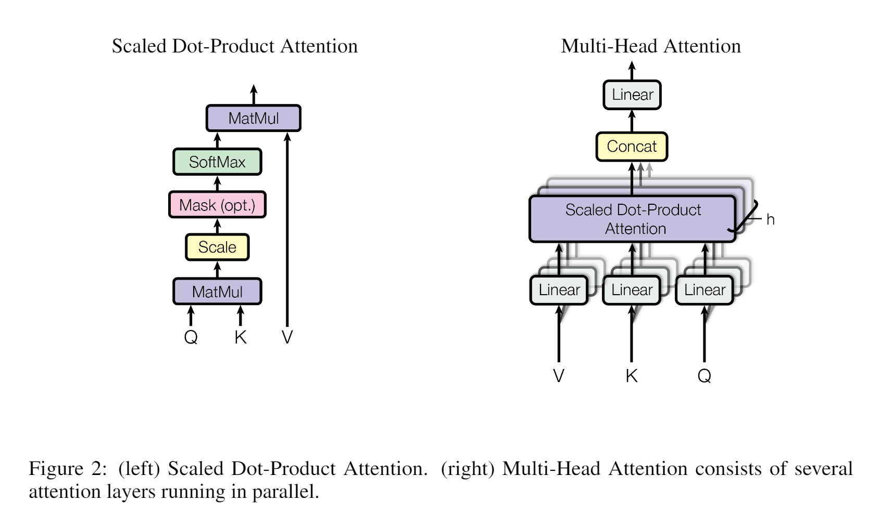
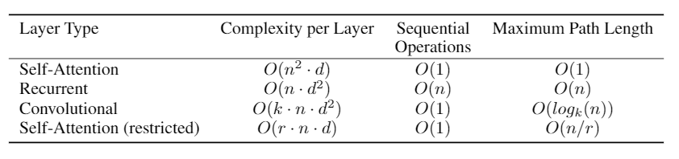

论文地址:Attention Is All Your Need
介绍
在2017年，LSTM在句子模型和翻译问题中是最先进的技术，常规RNN将位置与计算时间中的步骤对齐，它们生成一个隐藏状态序列ht，作为前一个隐藏状态ht-1和位置t的输入的函数。这种线性顺序的计算不利于并行化。Attention机制允许建立依赖关系，不考虑计算过程中输入和输出序列的距离问题。但绝大部分时候和RNN结合在一起使用。Transformer模型是首个完全依赖attention机制实现输入和输出序列全局依赖的模型，具有良好并行性。
背景介绍
减少顺序计算的目标，是拓展神经GPU、位图和ConvS2S的基础。所有这些都使用卷积神经网络作为基本构建块，并行计算所有输入和输出位置的隐藏表示。在这些模型里,两个来自任意输入或者输出位置的相关信号需要的操作数，随着距离间隔增长，在ConvS2S和ByteNet是线性增长。这使得学习两个遥远位置的依赖变得困难。在Transformer中操作数被减少到常数级，尽管以通过平均化attention权重位置减少有效分辨率（resolution）为代价，本文将之描述为多头注意力。
自我注意力（Self-attention），有时候也被称为内部注意力，是一种将单个序列的不同位置联系起来以计算序列表示的机制。自我注意力在很多领域被广泛使用，例如阅读理解、摘要总结、文本蕴涵和学习任务无关的句子表示。
端到端记忆网络，基于重复注意机制而不是序列排列的重复，已被证明在简单语言问题回答和语言建模任务中表现良好。
Transformer是首个基于自我注意力计算输入输出的分布表达，而不是序列对齐RNN或者卷积的转换模型。
模型结构
Encdoer把输入序列$(x_1,\ldots,x_n)$和连续分布$z=(z_1,\ldots,z_n)$连接起来。给定$z$，decoder会生成符号序列$(y_1,\ldots, y_m)$，每次一个元素。在每一个时刻，模型都是自回归的，在生成下一个符号时，把之前生成的符号作为额外信息附加到输出上。
Transformer模型整体架构使用堆叠的自注意力和点方向，把encoder和decoder层完全连接起来。
Encoder和Decoder的堆栈
Encoder：encoder由6个独立层构成，每一层有两个自称。第一层是多头自我注意力机制，第二层是简单的位置智能的全连接前馈网络。在每个子层使用残差连接，做层标准化处理。就是说，每一子层的输出是$LayerNorm(x+Sublayer(x))$，$SubLayer(x)$是由子层实现的函数。所有的子层，和embadding层一样，产生的输出维度是512。
Decoder：decoder也是6个独立层构成。在两个子层的基础上，增加了一个子层，表示对encoder输出的多头注意力。和encoder层一样，每个子层用残差连接，并且做标准化处理。同时对decoder层中的自我注意力子层做了修改，以防止在对当前位置计算时，把后续位置的信息也纳入计算。通过masking，并且把输出embedding偏移一个位置，确保了对位置i的预测只能依赖于位置小于i的已知输出。
Attention
Attention函数可以被描述为把query和一系列key-value的映射作为output，query、keys、values和output都是向量。Output是values的权重和，分配给每个value的权重由query的兼容函数与相应的key计算。
Scaled Dot-product Attention
把特定的attention称为“Scaled Dot-Product Attention”。输入由$d_k$维的query和key、$d_v$维的value组成。计算query和所有的key的内积，每一项除以$\sqrt{d_k}$，通过softmax函数获得value的权值。
把一系列query的Attention函数的输出用矩阵Q表示，key和value用矩阵K和V表示，矩阵的输出可以表示为：
$$Attention(Q,K,V) = softmax(\frac{QK^T}{\sqrt{d_k}})\tag{1}$$
使用最广泛的attention函数是additive attention和dot-product attention。除了计算缩放因子$(\frac{1}{\sqrt{d_k}})，$Dot-product attention在整个算法中是一致的。Additive attention通过前馈网络计算单个隐藏层的compatibility函数。这两个函数理论上复杂度相近，但实际上dot-product attention更快并且有更好的空间效率，因此可以用高度优化的矩阵乘法代码实现。
对于较小的$d_k$这两种方式表现相近，在不实用缩放因子$d_k$时additive attention表现得更好。作者认为对于较大值的$d_k$，内积变得非常巨大，使对应softmax函数区域的梯度变得非常小。为了抵消这方面的影响，把内积缩小为$\frac{1}{\sqrt{d_k}}$。
Multi-Head Attention
相比较使用$d_{model}$-demensional的query、key、value的单一attention函数，用不同的学习得到的线性投影，把key、value、query分别线性映射h次到$d_k$，$d_k$，和$d_v$维上更加有益。在每一次显现投影，并行调用attention函数，生成$d_v$-dimensional的输出值。把它们连接起来并再次映射，最后得到最终的value。多注意力头允许模型把来自不同分布子空间不同位置的信息结合起来。通过单个注意力头，平均化inhibit。
$$MultiHead(Q,K,V) = Concat(head_1,\ldots,head_h)W^O\\where\,head_i = Attention(QW_i^Q,KW_i^K,VW_i^V)$$
映射矩阵$W_i^Q\in \mathbb{R}^{d_{model}\times d_k}$，$W_i^K\in \mathbb{R}^{d_{model}\times d_k}$，$W_i^V\in \mathbb{R}^{d_{model}\times d_v}$，$W^O\in \mathbb{R}^{hd_{v}\times d_model}$。
设置h=8层并行的attention层或者注意力头，$d_k=d_v=\frac{d_model}{h}=64$。优于注意力头的降维效果，整个计算的开销和不降维的单注意力头attention相似。

模型中attention的应用
Transformer在三方面使用多注意力头：
- 在“encoder-decoder”层，query来自前一decoder层，存储的key和value来自前一encoder层。使得decoder的每一个位置都和整个输入序列关联起来。这个实现方式模仿了Seq2Seq模型中经典的encoder-decoder attention机制。
- encoder包含了自我注意力层。在自我注意力层汇总所有的key、value、query都来自前一encoder层的output。Encoder的每一个位置都和前一encoder层关联起来。
- decoder的自我注意力层允许decoder的每一个位置，和decoder中的其他所有位置，包括自身位置关联起来。需要防止信息的向左流动，以保持自回归特性。在scaled dot-product attention中，通过对softmax的非法链接的所有value做mask——把value设置成-∞实现。
position-wise 前馈网络
每一个attention子层，包含一个全连接前馈网络，独立且相同地应用在每个位置上。前馈网络使用RelU激活并包含两个线性转换。
$$FFN(x)=max(0,xW_1+b_1)W_2+b_2\tag{2}$$
对于不同位置，线性转换的方式是相同的，但不同层使用不同的参数值。另一种方式描述是两个卷积，内核大小是1。输入和输入的维度$d_{model}=512$，inner-layer的维度$d_{ff}=2048$
Embedding和Softmax
和其他句子转换模型相似，Transformer使用学习得到的embedding把输入的token和输出的token转变为$d_{model}$维度的向量。同时使用常规的学习得到的线性转换和softmax函数，把decoder的输出转变成后续token可能性的预测。两个embedding层之间和pre-softmax线型转变共用相同的权重矩阵。在embedding层，把权重乘以$\sqrt{d_{model}}$。
位置编码
Transformer不包含循环和卷积，为了让模型利用句子的顺序，需要添加token在句子里相对或者绝对位置的信息。
在encoder和decoder堆栈的末端，对输入的embedding添加了位置编码。位置编码有和embedding相同的维度$d_{model}$，所以它们可以相加。位置编码的设置有两种选择，学习或者固定顺序。
本模型采用不同频度的sin和cos函数：
$$PE_(pos,2i)=sin(\frac{pos}{10000^{\frac{2i}{d_{model}}}})\\ \,\\PE_(pos,2i+1)=cos(\frac{pos}{10000^{\frac{2i}{d_{model}}}})$$
$pos$表示位置，$i$表示维度。位置编码的每一个维度对应一个正弦信号。选择整个函数是因为假设对于任何给定的$$k$$偏置，$$PE_{pos+k}$$都可以被表示为$PE_{pos}$的线性表示，模型可以比较容易地学习到。正弦函数可以让模型推断出比在训练中遇到的序列长度更长的句子。
Why Self-Attention
把Transformer和RNN、CNN作比较，论证为什么选择Transformer。RNN和CNN处理 把可变长度的句子符号分布$(x_1,\ldots,x_n)$映射到另一个登场的句子$(z_1,\ldots,z_n)$，和Transformer在一个隐藏层里decoder或者encoder对句子做的操作类似。
一共有三点，一是每一层的整体计算复杂度，另一点是可并行计算的单元数量——用所需的最小顺序操作数量度量，第三点是网络中长距离依赖的路径长度——网络中不同的层任意两个输入输出的最大路径长度。

训练
四个超参，使用Adam优化器，设置$\beta_1=0.9,\beta_2=0.98,\epsilon=10^{-9}$,根据公式在训练中改变学习率：
$$lrate=d_{model}^{-0.5}\cdot min(step_num^{-0.5}, step_num\cdot warmup_steps^{-1.5})\tag{3}$$
使用了两种类型的正则化方式。
- 离散Dropout：在每一个子层的output被加入子层和标准化前，对output做dropout。并且对embedding的和，与encoder和decoder的堆栈里位置编码做dropout。设置$P_{drop}=0.1$。
- 标签平滑化：设置平滑值$\epsilon_{ls}=0.1$,虽然会增加困惑度，但提升了准确率和BLEU分数。
结论
Transformer模型是是首个完全依托于attention的句子转换模型，用多头自我注意力代替了广泛用于encoder-decoder结构中的循环层。在机器翻译中取得SOTA。
参考文献
Attention Is All Your Need
Layer normalization
Neural machine translation by jointly learning to align and translate
Long short-term memory-networks for machine reading